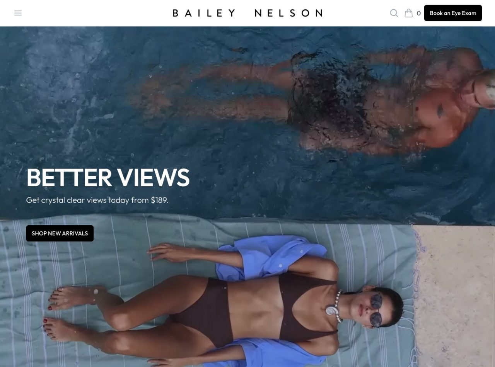
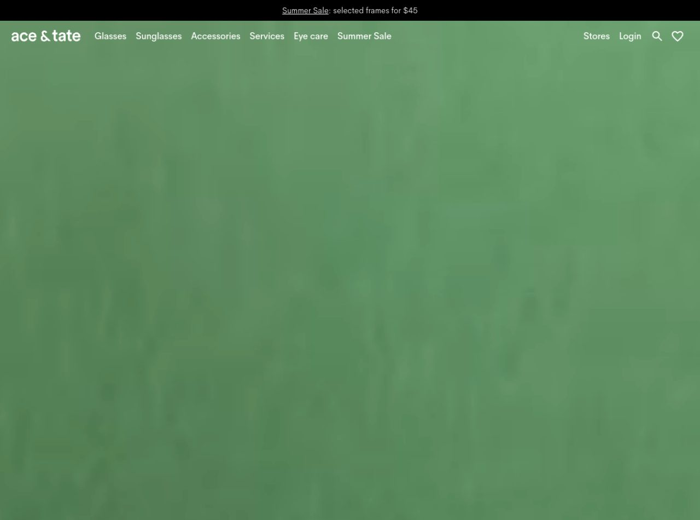
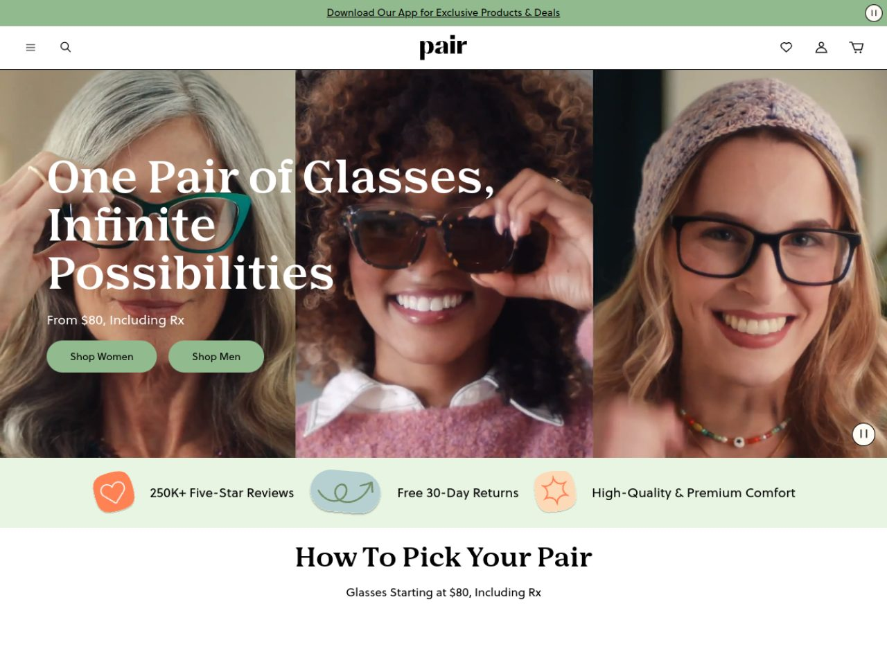

Análisis de 3 marcas de gafas referentes en el mundo, con foco en las que combinan tienda + examen visual (como nuestros clientes de Bogotá). Qué hacen para verse premium y vender online.
Retail óptico premium, óptica omnicanal y máquina de conversión DTC.

Fotografía editorial de estilo de vida (tomas cenitales de piscina/playa), gente real y diversa. Vende un estilo de vida, no una montura.
Hero en video, transiciones limpias, mucho blanco. Elegancia por sobriedad; el protagonismo es de la foto.
Logo centrado tipo marca de moda + acciones a los lados. El "Book an Eye Exam" es el único botón sólido: toda la jerarquía empuja al examen.
Serif con mucho tracking (lujo accesible) + titular condensado grande "BETTER VIEWS". Precio visible bajo el titular.
Title = "Glasses, Sunglasses & Comprehensive Eye Tests" (producto + servicio). Meta que combina online + en tienda: SEO omnicanal.
El examen visual como puerta de entrada (igual que nuestras ópticas), captura de email con Klaviyo, precio desde el hero.

Color-blocking y fotografía de moda con paletas monocromas fuertes. Estética de revista/galería, muy europea.
Animaciones con Framer Motion y Rive, transiciones suaves entre secciones de color. Moderno sin ser recargado.
Máximo espacio en blanco, retícula estricta, tipografía pequeña de nav. La imagen full-bleed manda; el texto es mínimo.
Sans-serif geométrica, jerarquía por tamaño de imagen más que de texto. Sofisticado y confiado.
Stack headless moderno (Next + Contentful + Centra), title con precio y ubicación de diseño ("Amsterdam designed glasses from €145"), JSON-LD. Rápido y bien indexado.
Oferta de entrada agresiva ("frames for $45"), sección "Eye care" y "Stores" para el modelo omnicanal.

Video en mosaico de gente real, diversa y sonriendo, usando el producto. Alegría y pertenencia por encima del producto en sí.
GSAP para animaciones de scroll, Swiper para carruseles, video autoplay con control de pausa. Dinámico pero rápido.
Hero → barra de confianza (reseñas, devoluciones, calidad) → "How To Pick Your Pair" (guía). Cada bloque responde una objeción de compra.
Serif display grande para el beneficio emocional, precio inmediato debajo, dos CTAs segmentados (Women/Men). Lectura guiadísima.
Shopify + Yotpo (reseñas para rich snippets ★ en Google) + Klaviyo (email/automatización). Meta con propuesta única y precio.
Clase magistral: precio transparente, 250K reseñas, devolución 30 días, CTAs segmentados, guía de compra y captura de app/email. Todo mide y convierte.
Qué toma prestado cada referente.
| Dimensión | Bailey Nelson | Ace & Tate | Pair Eyewear |
|---|---|---|---|
| Fortaleza | Omnicanal (examen+tienda) | Diseño editorial | Conversión DTC |
| CTA principal | "Book an Eye Exam" fijo | Oferta "$45" | Shop Women / Men + precio |
| Imagen | Editorial de estilo de vida | Color-blocking de moda | Video de gente real diversa |
| Efectos | Video, sobriedad | Framer + Rive | GSAP + Swiper |
| Prueba social | Marca / diseño | Marca / diseño | 250K reseñas 5★ (Yotpo) |
| Qué robamos | "Agenda tu examen" fijo + editorial de estilo de vida | Fotografía a color full-bleed + minimalismo | Precio + reseñas + barra de confianza + guía de compra |
*_full.png). Nota: Warby Parker estaba en mantenimiento y Cubitts bloquea capturas automáticas; se usaron 3 referentes que rendían y encajan mejor con el modelo óptica+examen.